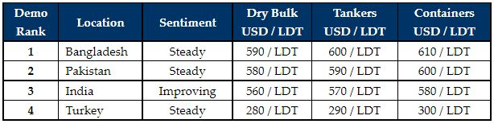

inWeekly Demolition Reports09/08/2021
Prices across the Indian sub-continent ship recycling markets continue their impressive upward trajectory this week, as end Buyerspress on for any availabletonnage, at levels well above USD 600/LT LDT, especially in the case of Bangladesh and a now firming Pakistani market.
The summer months have brought with them a relative paucity of units, which is somewhat surprising given the record levels we are witnessing once again and the fact that the market has more than doubled in just the space of a year.
Any supply of vessels is largely from the beleaguered Tanker and Offshore sectors, but there are still the odd Ropax / Passenger units and Reefers to talk of as well, that are being diverted primarily into India.
Dry Bulk and Container chartering markets have been flying for much of this year, so we have seen very few of these units being proposed for recycling, as Owners are now opting to pass surveys on vessels almost 30 years of age, as such have been the freight earnings in 2021.
On the Covid-19 front, the Delta variant continues to increasingly cause concern across the globe, and the sub-continent has yet to reach a satisfactory level of vaccinations to begin reopening fully, just like the U.K., Israel, U.S.A. and various other Western nations have been. Even Turkey continues to battle fresh infections rates of over 22K fresh cases per day, but the situation there is still better than the sub-continent at present.
Overall, despite lockdown restrictions remaining in place (especially across Bangladesh in particular), ship deliveries and beachings continue in all locations and port reports are seeing a trickle of vessels arrive over each tide.
For week 32 of 2021, GMS demo rankings / pricing for the week are as below.

Download PDFSource: GMS,Inc.